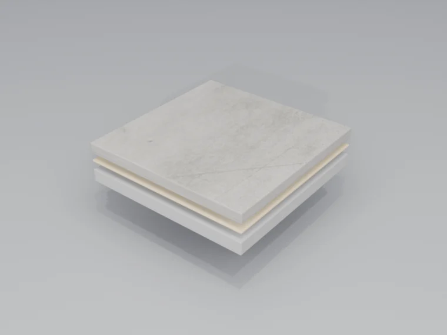

מערכות רזין מתיל מתאקרילט שמתקשות תוך שעות, לא ימים. כאשר ההשבתה עולה יותר מהרצפה עצמה, ה-MMA מספקת — עם כושר נשיאת תנועה מלא תוך 2–4 שעות בלבד.
היכן MMA מצטיינת
רצפת MMA היא הפתרון כאשר מערכות קונבנציונליות אינן מהירות מספיק. הכימיה הייחודית שלה מאפשרת התקנה בתנאים שהיו עוצרים פרויקטי רצפה אחרים.
פעילות 24/7
ייצור מזון, תעשייה פרמצבטית, לוגיסטיקה — מתקנים שאינם יכולים להיסגר. התקנה בסוף שבוע או בן-לילה.
אחסון בקירור
מתקשה בטמפרטורות נמוכות עד −30°C. רצפות מקפיא, מתקני שרשרת קור, מחסנים מקוררים.
שיפוץ מסחרי
שיפוצי קניונים, חידוש סופרמרקטים — התקנה בן-לילה, פתיחה למחרת בבוקר.
בריאות
שירותי בריאות ושיפוצים רגישים — רק בליווי אוורור קפדני, תכנון ריח ובקרת גישה מדורגת.
מהירות ללא פשרות
ההתקשות המהירה של MMA אינה משמעה קיצורי דרך בהכנה. הכנת פני השטח עוקבת אחר אותם תקנים מחמירים כמו מערכות אפוקסי.
- התזת חרסיות (shot blast) — השיטה המועדפת לפרופיל פני שטח מיטבי. ניתן להמשיך מיד לאחריה
- ליטוש יהלום — חלופה כאשר התזת חרסיות אינה ישימה
- סבילות ללחות — סלחנית יותר מאפוקסי, אך עודף לחות עדיין מחייב טיפול
- תנאי קור — אין צורך בחימום להתקנות מתחת לאפס
- התקשות פריימר מהירה — פריימרי MMA מתקשים תוך 30–60 דקות, ומאפשרים השלמת מערכת באותו יום
ארכיטקטורת המערכת
מערכות MMA עוקבות אחר גישה רב-שכבתית הדומה לאפוקסי, אך עם זמני התקשות מהירים בהרבה בכל שלב.

פריימר ריאקטיבי
פריימר מבוסס MMA חודר ואוטם את התשתית. מתקשה תוך 30–60 דקות ב-20°C, ומהר יותר באופן יחסי בטמפרטורות גבוהות.
שכבת גוף
רזין MMA בפיזור עצמי או בפזור. פזור אגרגט להתנגדות החלקה במידת הצורך. מתקשה תוך 1–2 שעות.
שכבת איטום
שכבה עליונה שקופה או צבועה. נוסחאות אליפטיות יציבות-UV ליישומים חיצוניים או בעלי תאורה גבוהה. התקשות מלאה תוך 1–2 שעות.
וריאנטים של המערכת
MMA זמינה בתצורות מרובות כדי להתאים לדרישות היישום הספציפיות שלכם:
פיזור עצמי
גימור חלק ורציף. 2–3 מ"מ. התקנה מהירה להשבתה מינימלית.
פזור קוורץ
קוורץ צבעוני לעמידות ולהתנגדות החלקה. בנייה כוללת של 3–4 מ"מ.
מרקם מחוספס
גימור אגרגט מחוספס לאזורים רטובים, רמפות ויישומים חיצוניים.
פתיתים דקורטיביים
פזור פתיתי צבע לערך אסתטי. נפוץ במסחר ובקמעונאות.
יתרונות מרכזיים
- התקשות מהירה — מתוכננת לחלונות השבתה קצרים; תזמון התנועה תלוי בבניית המערכת ובטמפרטורת האתר.
- התקשות בטמפרטורה נמוכה — מותקנת ב-−30°C עד +35°C. אין צורך בחימום לאחסון בקירור או לעבודת חורף.
- יציבות UV — MMA אליפטית אינה מצהיבה ואינה מתגירת. מתאימה ליישומים חיצוניים.
- עמידות כימית — עמידות מצוינת בחומצות, בסיסים וממסים רבים.
- גמישות — גמישה יותר מאפוקסי, מגשרת על סדקים שערתיים, מתמודדת עם תזוזת תשתית.
- הפחתת השבתה — היתרון האמיתי הוא תכנון עבודה מדורג כאשר השבתה ארוכה אינה מציאותית.
התאמה טובה
אחסון בקירור, חידושי קמעונאות, מסדרונות תיקון, מתקני 24/7 ופרויקטים מדורגים שבהם ההשבתה יקרה יותר מעלות החומר.
לא הבחירה הראשונה
חללים מאוכלסים עם אוורור לקוי, פעילות רגישה לריח, תשתיות לא ידועות או פרויקטים שבהם השבתת אפוקסי סטנדרטית מקובלת.
לבדוק תחילה
אוורור, סבילות לריח, טמפרטורה, פרופיל התשתית, לחות, בקרת גישה וזמן המסירה המדויק.
פרוטוקול תחזוקה
רצפות MMA מספקות ביצועים דומים לאפוקסי עם התקנה מהירה משמעותית. התחזוקה פשוטה.
יומי
טאטוא או שטיפה אוטומטית להסרת לכלוך. ניקוי נקודתי של שפכים עם התרחשותם.
שבועי
שטיפה מכאנית בחומר ניקוי בעל pH ניטרלי. שטיפה יסודית.
רבעוני
ניקוי עמוק ובדיקה. בדיקת מצב השכבה העליונה באזורי שחיקה גבוהה.
לפי הצורך
ציפוי חוזר מהיר אפשרי — ניתן ליישם שכבה עליונה של MMA בהכנה מינימלית.